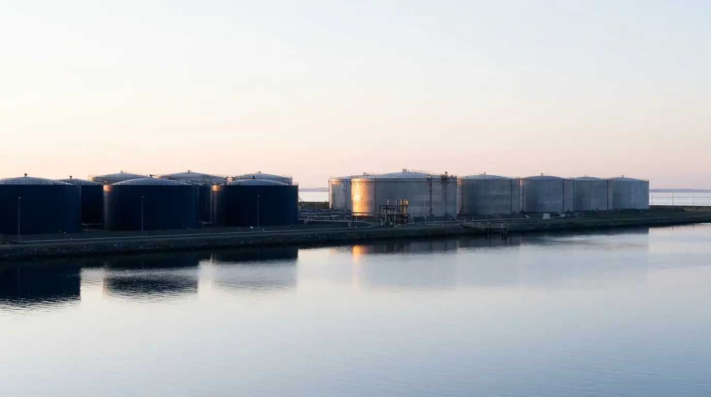
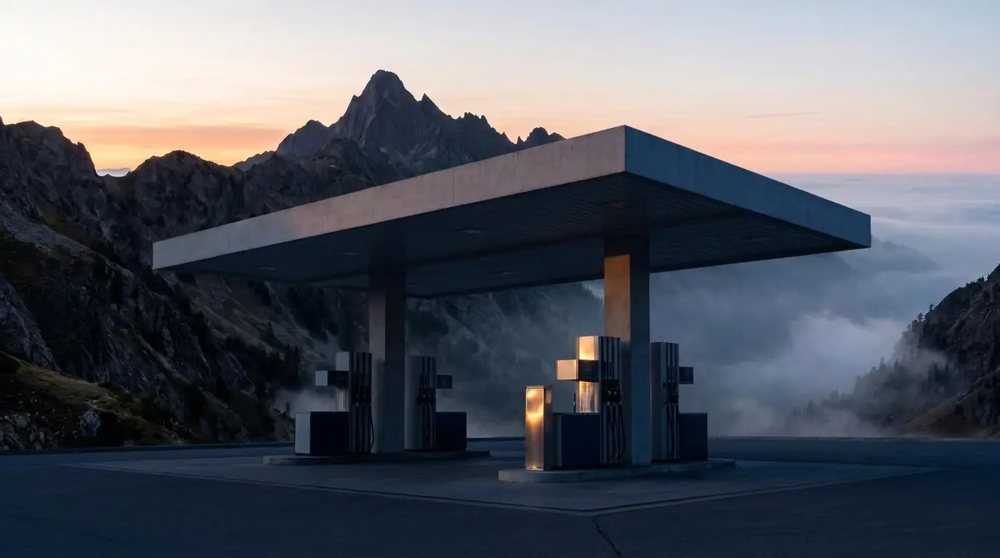
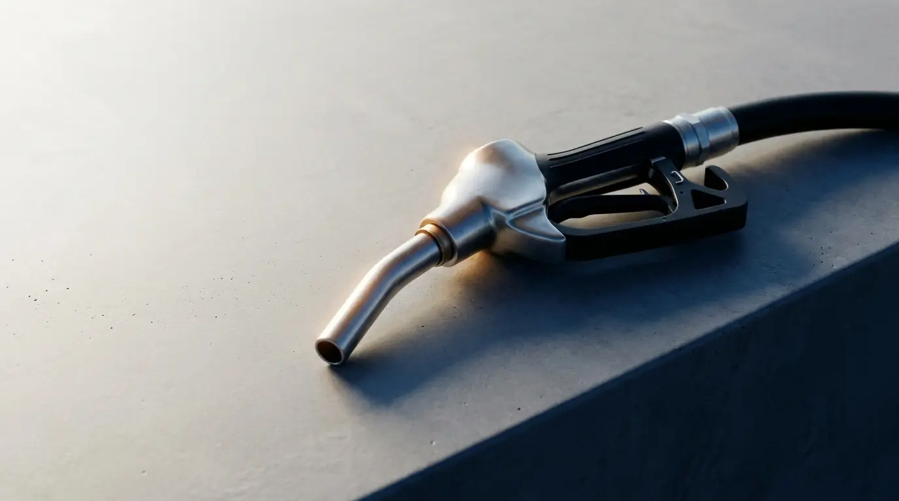
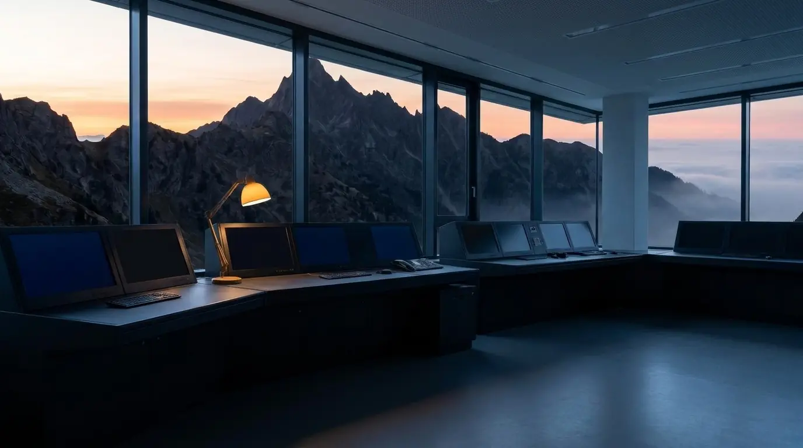
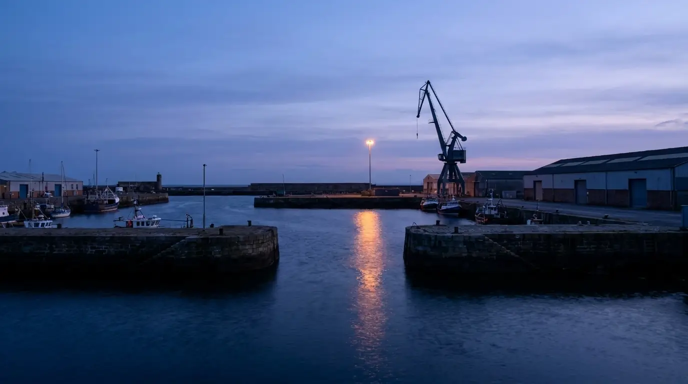

Aviation
Fuel for airfields and ground fleets.
Find out moreFrom airfields to mine sites, Northline supplies the product and the paperwork that goes with it.
Fuel for airfields and ground fleets.
Find out moreBinder for roads and hardstand work.
Find out moreSupply arranged around secure sites.
Find out moreDiesel and oils for farms and towns.
Find out moreBunkers and port-side product.
Find out moreBulk fuel for remote operations.
Find out moreCards and bulk for road fleets.
Find out moreIndustrial solvents, handled with care.
Find out more
Infrastructure
Terminals, tanks and berths hold the product until a truck, a ship or a pipeline takes it on.
View operations
Motorists
A plain network for people who need fuel, a clean stop, and a price they can read before they pull in.
Find a siteToday’s posted prices, by terminal.
Open pricesAccounts, invoices and card controls.
Log inProduct sheets for sites and fleets.
DownloadOils and greases for engines and plant.
View range
Coastal sites switch grade this month. Inland sites follow two weeks later.
Read more
Booked loads can now arrive until 10pm on weeknights.
Read more
The run calls at three small ports that used to wait on road tankers.
Read more